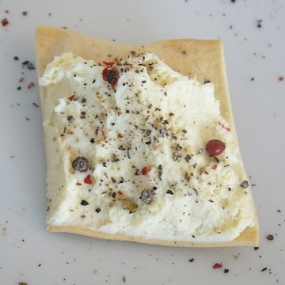
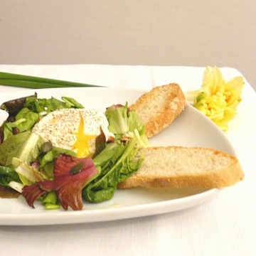
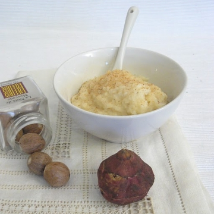
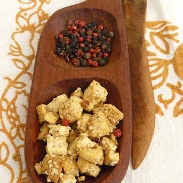
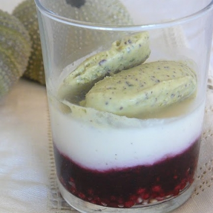
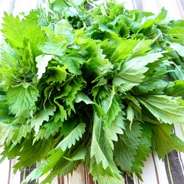

cucino.net
Lea Madegravis condivide le sue ricette su cucino.net.
Registrati
per pubblicare le tue. È gratis!
Lea Madegravis
Cremino al cioccolato
05 Giu 2011

Crema di baccalà con pepe rosso
05 Giu 2011
Pan brioche
21 Apr 2011
Crema di carote e topinambur con...
21 Apr 2011
Plumcake con olive, feta e...
15 Apr 2011
Biscotti al tè verde Matcha
14 Apr 2011

Insalata primaverile
14 Apr 2011
Paccheri con carciofi veneziani
14 Apr 2011
Vellutata di piselli alla menta...
14 Apr 2011
Frittelle di fiori di acacia
14 Apr 2011

Purè di tuberi misti
14 Apr 2011

Tofu con semi di sesamo e melange...
14 Apr 2011

Bicchierino di latte di mandorle...
14 Apr 2011

Gnudi di ricotta e ortiche
14 Apr 2011
Crostata di arance e mandorle
14 Apr 2011